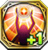

Imitate Gear
Gear Skills obtained from Imitate Killers. Can only be use by Special units and Imitate Killers.
5103523

Damocles ダモクレス |
 プリーストの愛
プリーストの愛
|
|---|---|
| 自身を含む周囲3マス以内の味方ユニットの移動不可・行動不可を治癒し、HPを最大HPの20%分回復する | |
5502723

Freischutz フライシュッツ |
 ランサーの信仰
ランサーの信仰
|
| 自身の力が25上昇し、攻撃時、35%の確率で1ターンの間麻痺を付与する | |
5302623

Grayside グラーシーザ |
 ウォーリアーの正義
ウォーリアーの正義
|
| クエスト開始から3ターン目までの間、自軍フェーズ開始時に、自身のHPが100%回復する | |
5202523

Hercule エルキュール |
 セイバーの希望
セイバーの希望
|
| 自身を含む周囲3マス以内の味方ユニットの出血・忘却を治癒し、HPを最大HPの20%分回復する | |
5202533

Hercule エルキュール |
セイバーの演目 |
| 敵から攻撃を仕掛けられた時、自身の物攻が50%上昇する | |
5302523

Minerva ミネルヴァ |
 アーチャーの知恵
アーチャーの知恵
|
| 自身の物攻が20上昇する。さらに自軍フェーズ開始時、自身および周囲3マス以内の味方ユニットのHPを最大HPの10%分回復する | |
5602023

Ness ネス |
 ランサーの節制 |
| 自身を除く、味方ユニット1体のコマンドスキルの使用回数を1回分回復する。さらにHP50%分回復する | |
5103623

Ragnarok ラグナロク |
 ガンナーの八輝
ガンナーの八輝
|
| 1ターンの間、敵軍全ユニットの運を35下降させる | |
5401723

Suiha スイハ |
 セイバーの勇気
セイバーの勇気
|
| 自身の物攻を50上昇する。クエスト開始から3ターンの間、自軍フェーズ開始時、自身の最大HPの10%分ダメージを受ける ※自身のHPが500未満の場合はダメージを受けない | |
|
5401733
Suiha スイハ |
 セイバーの興宴
セイバーの興宴
|
| デュエル開始時にHP2以上の場合、1回まで致死ダメージを受けてもHP1で耐える |